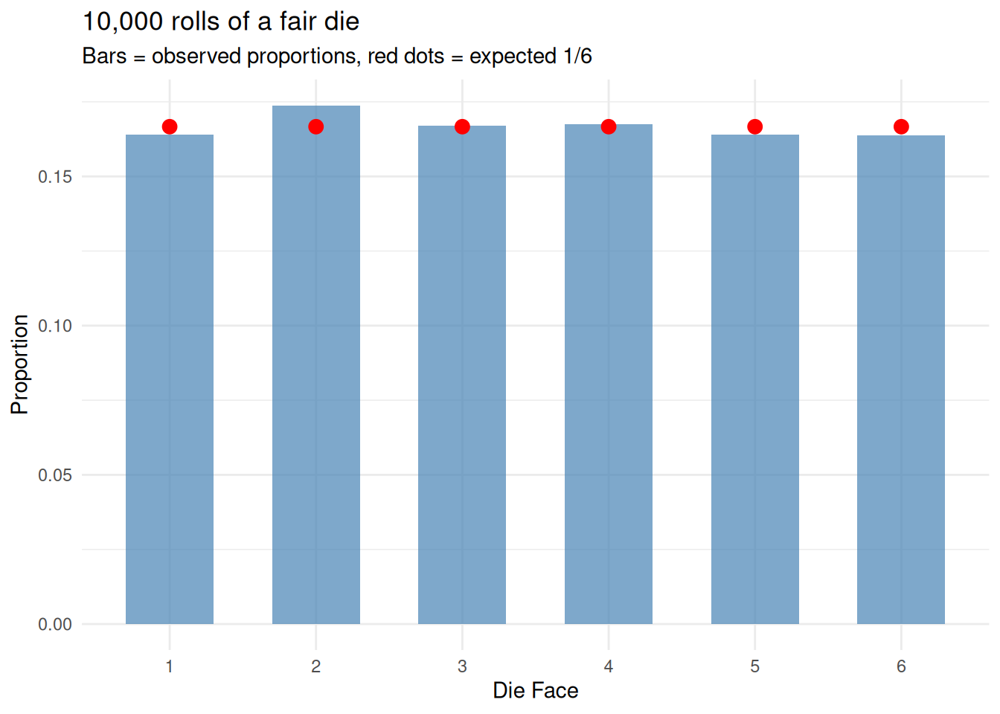
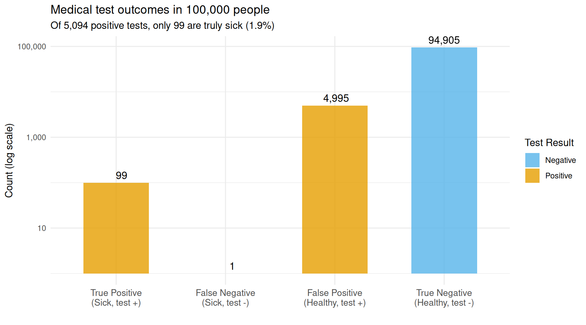
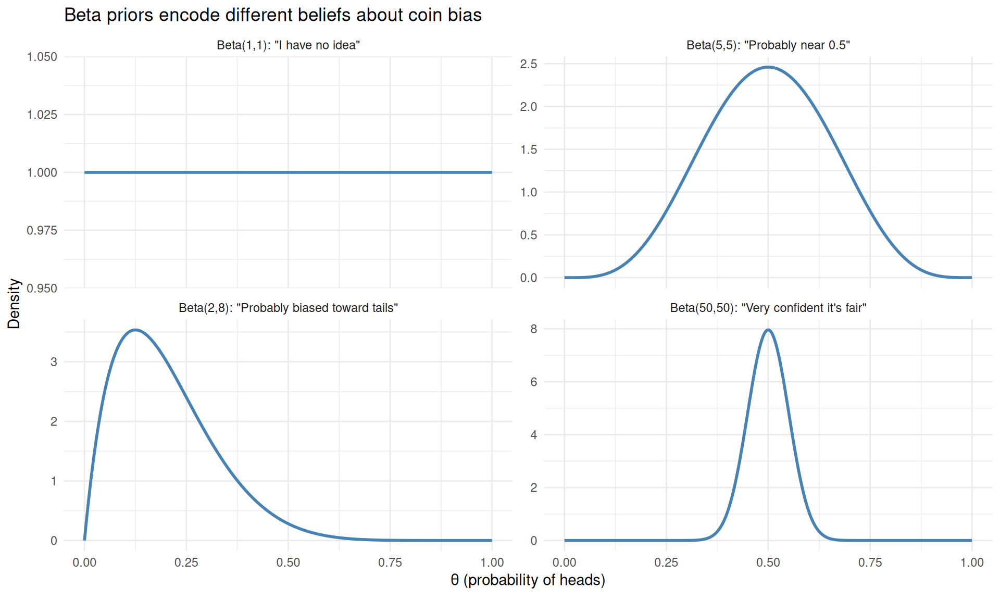
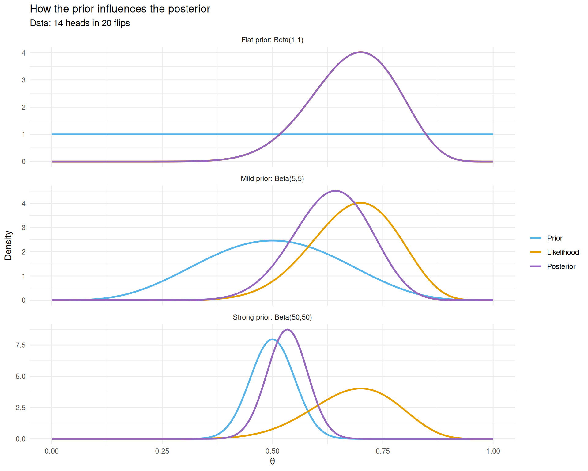
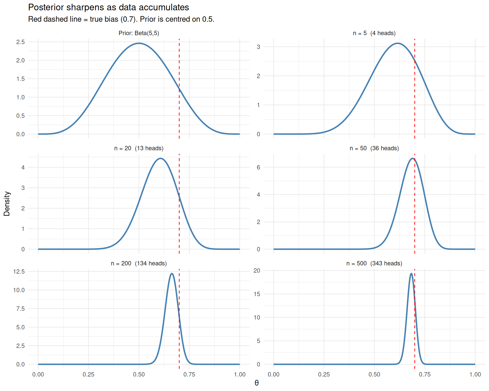
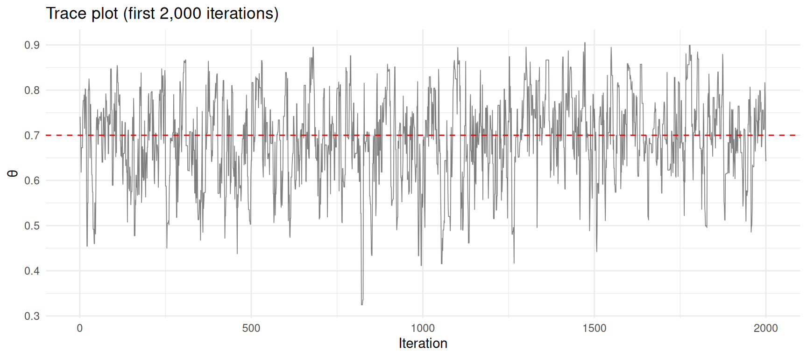
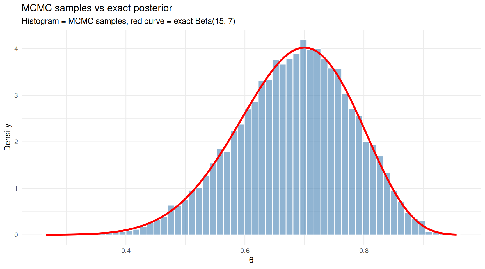
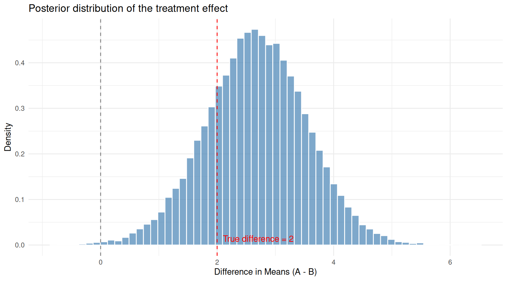

Last updated: 2026-03-24
Checks: 7 0
Knit directory: muse/
This reproducible R Markdown analysis was created with workflowr (version 1.7.2). The Checks tab describes the reproducibility checks that were applied when the results were created. The Past versions tab lists the development history.
Great! Since the R Markdown file has been committed to the Git repository, you know the exact version of the code that produced these results.
Great job! The global environment was empty. Objects defined in the global environment can affect the analysis in your R Markdown file in unknown ways. For reproduciblity it’s best to always run the code in an empty environment.
The command set.seed(20200712) was run prior to running
the code in the R Markdown file. Setting a seed ensures that any results
that rely on randomness, e.g. subsampling or permutations, are
reproducible.
Great job! Recording the operating system, R version, and package versions is critical for reproducibility.
Nice! There were no cached chunks for this analysis, so you can be confident that you successfully produced the results during this run.
Great job! Using relative paths to the files within your workflowr project makes it easier to run your code on other machines.
Great! You are using Git for version control. Tracking code development and connecting the code version to the results is critical for reproducibility.
The results in this page were generated with repository version 36044b1. See the Past versions tab to see a history of the changes made to the R Markdown and HTML files.
Note that you need to be careful to ensure that all relevant files for
the analysis have been committed to Git prior to generating the results
(you can use wflow_publish or
wflow_git_commit). workflowr only checks the R Markdown
file, but you know if there are other scripts or data files that it
depends on. Below is the status of the Git repository when the results
were generated:
Ignored files:
Ignored: .Rproj.user/
Ignored: data/1M_neurons_filtered_gene_bc_matrices_h5.h5
Ignored: data/293t/
Ignored: data/293t_3t3_filtered_gene_bc_matrices.tar.gz
Ignored: data/293t_filtered_gene_bc_matrices.tar.gz
Ignored: data/5k_Human_Donor1_PBMC_3p_gem-x_5k_Human_Donor1_PBMC_3p_gem-x_count_sample_filtered_feature_bc_matrix.h5
Ignored: data/5k_Human_Donor2_PBMC_3p_gem-x_5k_Human_Donor2_PBMC_3p_gem-x_count_sample_filtered_feature_bc_matrix.h5
Ignored: data/5k_Human_Donor3_PBMC_3p_gem-x_5k_Human_Donor3_PBMC_3p_gem-x_count_sample_filtered_feature_bc_matrix.h5
Ignored: data/5k_Human_Donor4_PBMC_3p_gem-x_5k_Human_Donor4_PBMC_3p_gem-x_count_sample_filtered_feature_bc_matrix.h5
Ignored: data/97516b79-8d08-46a6-b329-5d0a25b0be98.h5ad
Ignored: data/Parent_SC3v3_Human_Glioblastoma_filtered_feature_bc_matrix.tar.gz
Ignored: data/brain_counts/
Ignored: data/cl.obo
Ignored: data/cl.owl
Ignored: data/jurkat/
Ignored: data/jurkat:293t_50:50_filtered_gene_bc_matrices.tar.gz
Ignored: data/jurkat_293t/
Ignored: data/jurkat_filtered_gene_bc_matrices.tar.gz
Ignored: data/pbmc20k/
Ignored: data/pbmc20k_seurat/
Ignored: data/pbmc3k.csv
Ignored: data/pbmc3k.csv.gz
Ignored: data/pbmc3k.h5ad
Ignored: data/pbmc3k/
Ignored: data/pbmc3k_bpcells_mat/
Ignored: data/pbmc3k_export.mtx
Ignored: data/pbmc3k_matrix.mtx
Ignored: data/pbmc3k_seurat.rds
Ignored: data/pbmc4k_filtered_gene_bc_matrices.tar.gz
Ignored: data/pbmc_1k_v3_filtered_feature_bc_matrix.h5
Ignored: data/pbmc_1k_v3_raw_feature_bc_matrix.h5
Ignored: data/refdata-gex-GRCh38-2020-A.tar.gz
Ignored: data/seurat_1m_neuron.rds
Ignored: data/t_3k_filtered_gene_bc_matrices.tar.gz
Ignored: r_packages_4.5.2/
Untracked files:
Untracked: .claude/
Untracked: CLAUDE.md
Untracked: analysis/.claude/
Untracked: analysis/aucc.Rmd
Untracked: analysis/bimodal.Rmd
Untracked: analysis/bioc.Rmd
Untracked: analysis/bioc_scrnaseq.Rmd
Untracked: analysis/chick_weight.Rmd
Untracked: analysis/likelihood.Rmd
Untracked: analysis/modelling.Rmd
Untracked: analysis/wordpress_readability.Rmd
Untracked: bpcells_matrix/
Untracked: data/Caenorhabditis_elegans.WBcel235.113.gtf.gz
Untracked: data/GCF_043380555.1-RS_2024_12_gene_ontology.gaf.gz
Untracked: data/SeuratObj.rds
Untracked: data/arab.rds
Untracked: data/astronomicalunit.csv
Untracked: data/davetang039sblog.WordPress.2026-02-12.xml
Untracked: data/femaleMiceWeights.csv
Untracked: data/lung_bcell.rds
Untracked: m3/
Untracked: women.json
Unstaged changes:
Modified: analysis/isoform_switch_analyzer.Rmd
Modified: analysis/linear_models.Rmd
Note that any generated files, e.g. HTML, png, CSS, etc., are not included in this status report because it is ok for generated content to have uncommitted changes.
These are the previous versions of the repository in which changes were
made to the R Markdown (analysis/bayes.Rmd) and HTML
(docs/bayes.html) files. If you’ve configured a remote Git
repository (see ?wflow_git_remote), click on the hyperlinks
in the table below to view the files as they were in that past version.
| File | Version | Author | Date | Message |
|---|---|---|---|---|
| Rmd | 36044b1 | Dave Tang | 2026-03-24 | Bayes’ Theorem |
library(ggplot2)Bayes’ theorem is a formula for updating what you believe in light of new evidence. It is one of the most important results in probability and statistics, yet the formula itself is surprisingly short. The difficulty is not the maths — it is building the right intuition for what each piece means and why it matters.
This article starts from the basics of probability, builds up to the theorem, and then shows how it underpins an entire approach to statistics called Bayesian inference. The final sections introduce Markov chain Monte Carlo (MCMC), the computational engine that makes modern Bayesian analysis possible.
Probability is a number between 0 and 1 that measures how likely something is to happen:
# Simulate rolling a fair six-sided die 10,000 times
set.seed(1984)
rolls <- sample(1:6, size = 10000, replace = TRUE)
# The probability of each face should be close to 1/6
observed <- table(rolls) / length(rolls)
expected <- rep(1/6, 6)
df_dice <- data.frame(
face = factor(1:6),
observed = as.numeric(observed),
expected = expected
)
ggplot(df_dice, aes(x = face)) +
geom_col(aes(y = observed), fill = "steelblue", alpha = 0.7, width = 0.6) +
geom_point(aes(y = expected), colour = "red", size = 3) +
labs(x = "Die Face", y = "Proportion",
title = "10,000 rolls of a fair die",
subtitle = "Bars = observed proportions, red dots = expected 1/6") +
theme_minimal()
Complement rule: the probability that something does not happen is one minus the probability that it does.
\[P(\text{not } A) = 1 - P(A)\]
If the probability of rain is 0.3, the probability of no rain is 0.7.
Addition rule: for two events that cannot both happen at the same time (mutually exclusive):
\[P(A \text{ or } B) = P(A) + P(B)\]
The probability of rolling a 1 or a 2 on a fair die is \(\frac{1}{6} + \frac{1}{6} = \frac{1}{3}\).
If the events can overlap, we must subtract the overlap to avoid counting it twice:
\[P(A \text{ or } B) = P(A) + P(B) - P(A \text{ and } B)\]
# Drawing a card from a standard deck
# P(Heart or Face card)?
# Hearts: 13/52, Face cards: 12/52, Face cards that are Hearts: 3/52
p_heart <- 13 / 52
p_face <- 12 / 52
p_heart_and_face <- 3 / 52
p_heart_or_face <- p_heart + p_face - p_heart_and_face
cat(sprintf("P(Heart or Face card) = %.4f (= %d/52)\n",
p_heart_or_face, round(p_heart_or_face * 52)))P(Heart or Face card) = 0.4231 (= 22/52)The joint probability \(P(A \text{ and } B)\) is the probability that both \(A\) and \(B\) happen. If \(A\) and \(B\) are independent (one does not affect the other), the joint probability is simply:
\[P(A \text{ and } B) = P(A) \times P(B)\]
The probability of flipping two coins and getting heads on both is \(0.5 \times 0.5 = 0.25\).
But many real-world events are not independent. The probability of carrying an umbrella and the probability of rain are related. For dependent events, we need conditional probability.
Conditional probability answers: “What is the probability of \(A\), given that \(B\) has already happened?” It is written \(P(A \mid B)\) and read “the probability of A given B”.
Consider a simple example. A class has 30 students: 18 passed the exam and 12 failed. Among those who passed, 15 studied more than 10 hours and 3 studied less. Among those who failed, 4 studied more than 10 hours and 8 studied less.
study_data <- data.frame(
Outcome = c("Passed", "Passed", "Failed", "Failed"),
Study = c(">10 hours", "<=10 hours", ">10 hours", "<=10 hours"),
Count = c(15, 3, 4, 8)
)
cat(" >10 hours <=10 hours Total\n") >10 hours <=10 hours Totalcat(sprintf("Passed %2d %2d %2d\n", 15, 3, 18))Passed 15 3 18cat(sprintf("Failed %2d %2d %2d\n", 4, 8, 12))Failed 4 8 12cat(sprintf("Total %2d %2d %2d\n", 19, 11, 30))Total 19 11 30The overall probability of passing is \(P(\text{pass}) = 18/30 = 0.60\). But what if we know a student studied more than 10 hours? Now we restrict our attention to the 19 students who studied a lot. Of those, 15 passed:
\[P(\text{pass} \mid \text{>10 hours}) = \frac{15}{19} \approx 0.79\]
Knowing the student studied a lot increases the probability of passing from 0.60 to 0.79. That is what conditioning does: it narrows the universe to only the relevant cases and recalculates.
Conditional probability is defined as:
\[P(A \mid B) = \frac{P(A \text{ and } B)}{P(B)}\]
This says: the probability of \(A\) given \(B\) is the probability that both happen, divided by the probability that \(B\) happens. We are “zooming in” on the world where \(B\) is true and asking how often \(A\) also occurs.
Rearranging gives us the multiplication rule:
\[P(A \text{ and } B) = P(A \mid B) \times P(B)\]
This is important — it lets us compute joint probabilities from conditional ones.
# From our study example
p_pass_and_study <- 15 / 30
p_study <- 19 / 30
p_pass_given_study <- p_pass_and_study / p_study
cat(sprintf("P(pass and >10 hours) = %.4f\n", p_pass_and_study))P(pass and >10 hours) = 0.5000cat(sprintf("P(>10 hours) = %.4f\n", p_study))P(>10 hours) = 0.6333cat(sprintf("P(pass | >10 hours) = %.4f\n", p_pass_given_study))P(pass | >10 hours) = 0.7895A crucial point: \(P(A \mid B)\) is generally not the same as \(P(B \mid A)\).
These are different numbers answering different questions. Confusing the two is one of the most common errors in probabilistic reasoning, and it is exactly the problem that Bayes’ theorem solves.
We know that:
\[P(A \text{ and } B) = P(A \mid B) \times P(B)\]
But the joint probability is symmetric — \(P(A \text{ and } B) = P(B \text{ and } A)\) — so we can also write:
\[P(A \text{ and } B) = P(B \mid A) \times P(A)\]
Setting these equal:
\[P(A \mid B) \times P(B) = P(B \mid A) \times P(A)\]
Dividing both sides by \(P(B)\):
\[\boxed{P(A \mid B) = \frac{P(B \mid A) \times P(A)}{P(B)}}\]
That is Bayes’ theorem. It lets you flip a conditional probability: if you know \(P(B \mid A)\), you can compute \(P(A \mid B)\).
This is the most famous application of Bayes’ theorem. Suppose:
You test positive. What is the probability you actually have the disease?
Most people guess “about 95% or 99%”. The actual answer is much lower.
p_disease <- 0.001
p_pos_given_disease <- 0.99 # sensitivity
p_pos_given_healthy <- 0.05 # false positive rate
# P(positive) by the law of total probability
p_pos <- p_pos_given_disease * p_disease +
p_pos_given_healthy * (1 - p_disease)
# Bayes' theorem
p_disease_given_pos <- (p_pos_given_disease * p_disease) / p_pos
cat(sprintf("P(disease | positive test) = %.4f (%.2f%%)\n",
p_disease_given_pos, p_disease_given_pos * 100))P(disease | positive test) = 0.0194 (1.94%)Less than 2%! This surprises most people, but the logic is clear: the disease is so rare that even a small false positive rate produces many more false alarms than true detections.
Let’s visualise what happens in a population of 100,000 people.
pop <- 100000
n_sick <- round(pop * p_disease)
n_healthy <- pop - n_sick
true_pos <- round(n_sick * p_pos_given_disease)
false_neg <- n_sick - true_pos
false_pos <- round(n_healthy * p_pos_given_healthy)
true_neg <- n_healthy - false_pos
df_test <- data.frame(
result = c("True Positive\n(Sick, test +)",
"False Negative\n(Sick, test -)",
"False Positive\n(Healthy, test +)",
"True Negative\n(Healthy, test -)"),
count = c(true_pos, false_neg, false_pos, true_neg),
fill = c("Positive", "Negative", "Positive", "Negative")
)
df_test$result <- factor(df_test$result, levels = df_test$result)
ggplot(df_test, aes(x = result, y = count, fill = fill)) +
geom_col(alpha = 0.8, width = 0.6) +
geom_text(aes(label = format(count, big.mark = ",")), vjust = -0.5, size = 4) +
scale_fill_manual(values = c("Positive" = "#E69F00", "Negative" = "#56B4E9")) +
scale_y_log10(labels = scales::comma) +
labs(x = "", y = "Count (log scale)", fill = "Test Result",
title = "Medical test outcomes in 100,000 people",
subtitle = sprintf("Of %s positive tests, only %d are truly sick (%.1f%%)",
format(true_pos + false_pos, big.mark = ","),
true_pos,
100 * true_pos / (true_pos + false_pos))) +
theme_minimal() +
theme(axis.text.x = element_text(size = 10))
Out of 100,000 people, only 99 are sick. The test catches nearly all of them (98), but also falsely flags ~5,000 healthy people.
The orange bars are positive test results. The vast majority of them are false positives from the large healthy population. This is why screening tests for rare conditions are often followed by a second, more specific test.
Here is where Bayes’ theorem becomes powerful: after the first positive test, your updated probability of disease is ~2%. If you take a second, independent test and it is also positive, that 2% becomes the new prior:
# First test: prior is 0.001, posterior is ~0.02
posterior_1 <- p_disease_given_pos
# Second test: prior is now the posterior from the first test
p_pos_2 <- p_pos_given_disease * posterior_1 +
p_pos_given_healthy * (1 - posterior_1)
posterior_2 <- (p_pos_given_disease * posterior_1) / p_pos_2
cat(sprintf("After 1 positive test: P(disease) = %.4f (%.2f%%)\n",
posterior_1, posterior_1 * 100))After 1 positive test: P(disease) = 0.0194 (1.94%)cat(sprintf("After 2 positive tests: P(disease) = %.4f (%.1f%%)\n",
posterior_2, posterior_2 * 100))After 2 positive tests: P(disease) = 0.2818 (28.2%)Two positive tests makes the disease much more likely. Each piece of evidence updates your belief, and Bayes’ theorem is the mechanism for that update. This is the essence of Bayesian reasoning: beliefs are not fixed; they evolve as evidence accumulates.
In scientific applications, we use Bayes’ theorem in a slightly different notation. Instead of events A and B, we write:
\[P(\theta \mid \text{data}) = \frac{P(\text{data} \mid \theta) \times P(\theta)}{P(\text{data})}\]
where \(\theta\) represents the parameter(s) we want to estimate. Each piece has a name:
| Term | Name | What it means |
|---|---|---|
| \(P(\theta)\) | Prior | What we believed about \(\theta\) before seeing data |
| \(P(\text{data} \mid \theta)\) | Likelihood | How probable the observed data is under each value of \(\theta\) |
| \(P(\theta \mid \text{data})\) | Posterior | Our updated belief about \(\theta\) after seeing the data |
| \(P(\text{data})\) | Evidence (or marginal likelihood) | A normalising constant that ensures the posterior sums/integrates to 1 |
The relationship is often summarised as:
\[\text{Posterior} \propto \text{Likelihood} \times \text{Prior}\]
The “\(\propto\)” (proportional to) symbol means we can ignore \(P(\text{data})\) for most purposes — it is just a scaling factor.
The two major schools of statistics differ in how they treat parameters:
Neither approach is “right” — they answer different questions. But the Bayesian approach has a natural appeal: it directly answers “What should I believe now?” rather than “What would happen if I repeated this?”
Let’s make this concrete. You find a coin on the street and want to know if it is fair. You flip it 20 times and get 14 heads.
A frequentist would compute a p-value or confidence interval. A Bayesian would start with a prior belief about the coin’s bias, update it with the data, and report the posterior distribution.
The prior encodes what you believe before seeing data. For a coin’s bias \(\theta\) (the probability of heads), a natural choice is the Beta distribution, which lives on the interval [0, 1].
The Beta distribution has two parameters, \(\alpha\) and \(\beta\). Different values encode different prior beliefs:
theta <- seq(0, 1, length.out = 500)
priors <- data.frame(
theta = rep(theta, 4),
density = c(
dbeta(theta, 1, 1),
dbeta(theta, 5, 5),
dbeta(theta, 2, 8),
dbeta(theta, 50, 50)
),
prior = rep(c(
'Beta(1,1): "I have no idea"',
'Beta(5,5): "Probably near 0.5"',
'Beta(2,8): "Probably biased toward tails"',
'Beta(50,50): "Very confident it\'s fair"'
), each = length(theta))
)
priors$prior <- factor(priors$prior, levels = unique(priors$prior))
ggplot(priors, aes(x = theta, y = density)) +
geom_line(linewidth = 1, colour = "steelblue") +
facet_wrap(~prior, scales = "free_y", ncol = 2) +
labs(x = expression(theta ~ "(probability of heads)"), y = "Density",
title = "Beta priors encode different beliefs about coin bias") +
theme_minimal()
Different Beta priors encode different beliefs about the coin before seeing any data.
For the Beta-Binomial model (Beta prior + Binomial likelihood), the posterior has a closed-form solution — it is another Beta distribution:
\[\text{Prior: } \theta \sim \text{Beta}(\alpha, \beta)\] \[\text{Data: } k \text{ heads in } n \text{ flips}\] \[\text{Posterior: } \theta \mid \text{data} \sim \text{Beta}(\alpha + k, \beta + n - k)\]
The prior parameters \(\alpha\) and \(\beta\) can be thought of as “pseudo-observations”: \(\alpha\) is the number of heads you have already “seen” in your prior experience, and \(\beta\) is the number of tails.
k <- 14 # observed heads
n <- 20 # total flips
# Scaled likelihood (Beta(k+1, n-k+1) shape, for visual comparison)
lik_alpha <- k + 1
lik_beta <- n - k + 1
prior_specs <- list(
list(a = 1, b = 1, label = 'Flat prior: Beta(1,1)'),
list(a = 5, b = 5, label = 'Mild prior: Beta(5,5)'),
list(a = 50, b = 50, label = 'Strong prior: Beta(50,50)')
)
plot_data <- do.call(rbind, lapply(prior_specs, function(spec) {
post_a <- spec$a + k
post_b <- spec$b + n - k
data.frame(
theta = rep(theta, 3),
density = c(
dbeta(theta, spec$a, spec$b),
dbeta(theta, lik_alpha, lik_beta),
dbeta(theta, post_a, post_b)
),
curve = rep(c("Prior", "Likelihood", "Posterior"), each = length(theta)),
scenario = spec$label
)
}))
plot_data$curve <- factor(plot_data$curve, levels = c("Prior", "Likelihood", "Posterior"))
plot_data$scenario <- factor(plot_data$scenario,
levels = sapply(prior_specs, `[[`, "label"))
ggplot(plot_data, aes(x = theta, y = density, colour = curve)) +
geom_line(linewidth = 1) +
scale_colour_manual(values = c("Prior" = "#56B4E9",
"Likelihood" = "#E69F00",
"Posterior" = "#9467BD")) +
facet_wrap(~scenario, scales = "free_y", ncol = 1) +
labs(x = expression(theta), y = "Density", colour = "",
title = "How the prior influences the posterior",
subtitle = "Data: 14 heads in 20 flips") +
theme_minimal()
The posterior (purple) is a compromise between the prior (blue) and the likelihood (red). Stronger priors resist the data more.
Three things to notice:
This illustrates a fundamental property: the posterior is always a compromise between the prior and the data. With more data, the likelihood dominates and the prior matters less.
Once we have the posterior distribution, we can extract useful summaries.
# Using the flat prior: Beta(1,1)
post_a <- 1 + k
post_b <- 1 + n - k
# Posterior mean
post_mean <- post_a / (post_a + post_b)
# Posterior mode (most probable value)
post_mode <- (post_a - 1) / (post_a + post_b - 2)
# 95% credible interval
ci <- qbeta(c(0.025, 0.975), post_a, post_b)
cat(sprintf("Posterior mean: %.4f\n", post_mean))Posterior mean: 0.6818cat(sprintf("Posterior mode: %.4f (compare to MLE = %d/%d = %.4f)\n",
post_mode, k, n, k / n))Posterior mode: 0.7000 (compare to MLE = 14/20 = 0.7000)cat(sprintf("95%% credible interval: [%.4f, %.4f]\n", ci[1], ci[2]))95% credible interval: [0.4782, 0.8541]The credible interval has a direct interpretation: “There is a 95% probability that the true bias lies in this interval.” This is what most people think a frequentist confidence interval means, but it is only valid under the Bayesian interpretation.
As we collect more data, the posterior becomes narrower and the prior matters less. Let’s see what happens as we accumulate flips from a coin with a true bias of 0.7.
set.seed(1984)
true_theta <- 0.7
all_flips <- rbinom(500, size = 1, prob = true_theta)
# Show posterior after 5, 20, 50, 200, and 500 flips
checkpoints <- c(5, 20, 50, 200, 500)
# Use a mildly wrong prior: Beta(5,5) centred on 0.5
prior_a <- 5
prior_b <- 5
accum_data <- do.call(rbind, lapply(checkpoints, function(n_obs) {
k_obs <- sum(all_flips[1:n_obs])
a <- prior_a + k_obs
b <- prior_b + (n_obs - k_obs)
data.frame(
theta = theta,
density = dbeta(theta, a, b),
label = sprintf("n = %d (%d heads)", n_obs, k_obs)
)
}))
# Add the prior
accum_data <- rbind(
data.frame(theta = theta, density = dbeta(theta, prior_a, prior_b),
label = "Prior: Beta(5,5)"),
accum_data
)
accum_data$label <- factor(accum_data$label, levels = unique(accum_data$label))
ggplot(accum_data, aes(x = theta, y = density)) +
geom_line(linewidth = 1, colour = "steelblue") +
geom_vline(xintercept = true_theta, linetype = "dashed", colour = "red") +
facet_wrap(~label, scales = "free_y", ncol = 2) +
labs(x = expression(theta), y = "Density",
title = "Posterior sharpens as data accumulates",
subtitle = "Red dashed line = true bias (0.7). Prior is centred on 0.5.") +
theme_minimal()
As data accumulates, the posterior sharpens around the true value and the prior becomes irrelevant.
After just 5 flips, the posterior is wide and still influenced by the prior (centred on 0.5). By 50 flips, the posterior has found the right neighbourhood. By 500 flips, it is a tight spike around 0.7. The prior has been overwhelmed — with enough data, Bayesians and frequentists agree.
At this point, you might wonder: why bother with priors and posteriors when frequentist methods work fine? Here are some genuine advantages of the Bayesian approach:
Direct probability statements: “There is a 93% probability the treatment effect is positive” is more natural and useful than “the p-value is 0.04.”
Incorporating prior knowledge: in many fields (medicine, engineering), we have genuine prior information. Bayesian analysis lets us use it formally rather than pretending we know nothing.
Natural handling of small samples: when data is scarce, the prior regularises the estimates and prevents extreme conclusions. This is especially valuable in genomics, where you might have thousands of genes but only a handful of samples per gene.
Sequential updating: as new data arrives, the current posterior becomes the new prior. There is no need to re-analyse from scratch.
Complex models: hierarchical models, mixture models, and other structures that are difficult to fit with frequentist methods are often straightforward in a Bayesian framework.
The coin example was convenient: the Beta-Binomial model has a closed-form posterior. This is called a conjugate model — the prior and posterior are from the same family.
But most real problems are not conjugate. Consider a model with multiple parameters, non-standard distributions, or hierarchical structure. The posterior \(P(\theta \mid \text{data})\) may be a complicated, high-dimensional surface with no neat formula.
We can still write down Bayes’ theorem:
\[P(\theta \mid \text{data}) \propto P(\text{data} \mid \theta) \times P(\theta)\]
We can evaluate the right-hand side for any specific \(\theta\). But we cannot write the posterior in closed form, which means we cannot directly compute things like its mean or credible intervals.
The solution: instead of computing the posterior exactly, draw samples from it. If we can generate thousands of random values of \(\theta\) that are distributed according to the posterior, we can estimate any summary we want (means, medians, intervals) from those samples. This is where Markov chain Monte Carlo comes in.
MCMC is a family of algorithms that generate samples from a probability distribution, even when you cannot write that distribution in closed form. All you need is the ability to evaluate the distribution (up to a constant) at any point.
The “Markov chain” part means the algorithm generates a sequence of values where each value depends only on the previous one. The “Monte Carlo” part means we use random sampling.
The most intuitive MCMC algorithm is the Metropolis-Hastings algorithm.
Imagine you are exploring a mountainous landscape in dense fog. You cannot see the whole terrain — you can only check the elevation at your current position and at any proposed new position. Your goal is to spend time at each location in proportion to its elevation (higher locations = more time).
The algorithm:
The resulting sequence of positions will, after an initial “burn-in” period, approximate the shape of the landscape. Peaks are visited frequently, valleys rarely — exactly what we want for sampling from a posterior distribution.
Let’s implement Metropolis-Hastings for our coin example and verify that it gives the same answer as the exact Beta posterior.
metropolis_coin <- function(k, n, prior_a, prior_b,
n_iter = 50000, proposal_sd = 0.1) {
# Start at the MLE
theta_current <- k / n
samples <- numeric(n_iter)
# Evaluate log-posterior (up to a constant)
log_posterior <- function(theta) {
if (theta <= 0 || theta >= 1) return(-Inf)
dbinom(k, size = n, prob = theta, log = TRUE) +
dbeta(theta, prior_a, prior_b, log = TRUE)
}
accepted <- 0
for (i in seq_len(n_iter)) {
# Propose a new value
theta_proposed <- theta_current + rnorm(1, mean = 0, sd = proposal_sd)
# Accept or reject
log_ratio <- log_posterior(theta_proposed) - log_posterior(theta_current)
if (log(runif(1)) < log_ratio) {
theta_current <- theta_proposed
accepted <- accepted + 1
}
samples[i] <- theta_current
}
list(samples = samples, acceptance_rate = accepted / n_iter)
}
set.seed(1984)
mcmc_result <- metropolis_coin(k = 14, n = 20, prior_a = 1, prior_b = 1)
cat(sprintf("Acceptance rate: %.1f%%\n", mcmc_result$acceptance_rate * 100))Acceptance rate: 69.8%A trace plot shows the sampled values over iterations. It should look like a “fuzzy caterpillar” — exploring the parameter space without getting stuck.
df_trace <- data.frame(
iteration = seq_along(mcmc_result$samples),
theta = mcmc_result$samples
)
ggplot(df_trace[1:2000, ], aes(x = iteration, y = theta)) +
geom_line(alpha = 0.5, linewidth = 0.3) +
geom_hline(yintercept = 14/20, linetype = "dashed", colour = "red") +
labs(x = "Iteration", y = expression(theta),
title = "Trace plot (first 2,000 iterations)") +
theme_minimal()
Trace plot of MCMC samples. The chain explores the posterior distribution.
Let’s discard the first 5,000 iterations as “burn-in” (the chain needs time to find the high-density region) and compare the remaining samples to the exact Beta posterior.
burn_in <- 5000
post_samples <- mcmc_result$samples[(burn_in + 1):length(mcmc_result$samples)]
# Exact posterior: Beta(1 + 14, 1 + 6)
exact_a <- 1 + 14
exact_b <- 1 + 6
df_mcmc <- data.frame(theta = post_samples)
ggplot(df_mcmc, aes(x = theta)) +
geom_histogram(aes(y = after_stat(density)), bins = 60,
fill = "steelblue", colour = "white", alpha = 0.6) +
stat_function(fun = dbeta, args = list(shape1 = exact_a, shape2 = exact_b),
colour = "red", linewidth = 1.2) +
labs(x = expression(theta), y = "Density",
title = "MCMC samples vs exact posterior",
subtitle = "Histogram = MCMC samples, red curve = exact Beta(15, 7)") +
theme_minimal()
MCMC samples closely match the exact posterior distribution.
The histogram of MCMC samples closely matches the exact posterior curve. This confirms that the algorithm is working — and crucially, MCMC would work just as well for posteriors where no exact formula exists.
cat("MCMC estimates (after burn-in):\n")MCMC estimates (after burn-in):cat(sprintf(" Mean: %.4f (exact: %.4f)\n",
mean(post_samples), exact_a / (exact_a + exact_b))) Mean: 0.6824 (exact: 0.6818)cat(sprintf(" Median: %.4f (exact: %.4f)\n",
median(post_samples), qbeta(0.5, exact_a, exact_b))) Median: 0.6884 (exact: 0.6874)cat(sprintf(" 95%% CI: [%.4f, %.4f]\n",
quantile(post_samples, 0.025), quantile(post_samples, 0.975))) 95% CI: [0.4788, 0.8539]cat(sprintf(" Exact: [%.4f, %.4f]\n",
qbeta(0.025, exact_a, exact_b), qbeta(0.975, exact_a, exact_b))) Exact: [0.4782, 0.8541]The coin example was a sanity check — we didn’t need MCMC for it. Now let’s tackle a problem where the exact posterior is not available.
Suppose we have data from two groups and want to estimate the difference in means, with a model that uses a t-distribution for the likelihood (to be robust to outliers). There is no conjugate prior for this model, so MCMC is our only practical option.
set.seed(1984)
# Group A: treatment, Group B: control
# True difference in means is 2.0
group_a <- c(rnorm(25, mean = 12, sd = 3), 25) # one outlier
group_b <- rnorm(30, mean = 10, sd = 3)
cat("Group A: n =", length(group_a),
" mean =", round(mean(group_a), 2),
" sd =", round(sd(group_a), 2), "\n")Group A: n = 26 mean = 13.01 sd = 3.77 cat("Group B: n =", length(group_b),
" mean =", round(mean(group_b), 2),
" sd =", round(sd(group_b), 2), "\n")Group B: n = 30 mean = 10.32 sd = 2.88 cat("Observed difference:", round(mean(group_a) - mean(group_b), 2), "\n")Observed difference: 2.7 # Metropolis-Hastings for a robust comparison of two means
# Parameters: mu_a, mu_b, sigma (shared), df (degrees of freedom for t-distribution)
log_posterior_robust <- function(params, y_a, y_b) {
mu_a <- params[1]
mu_b <- params[2]
log_sigma <- params[3] # work on log scale to keep sigma positive
log_df <- params[4] # same for degrees of freedom
sigma <- exp(log_sigma)
df <- exp(log_df)
if (df < 1 || df > 100) return(-Inf)
# Log-likelihood (t-distribution)
ll_a <- sum(dt((y_a - mu_a) / sigma, df = df, log = TRUE) - log(sigma))
ll_b <- sum(dt((y_b - mu_b) / sigma, df = df, log = TRUE) - log(sigma))
# Priors (weakly informative)
lp_mu <- dnorm(mu_a, 0, 100, log = TRUE) + dnorm(mu_b, 0, 100, log = TRUE)
lp_sigma <- dnorm(log_sigma, 0, 5, log = TRUE) # log-normal prior
lp_df <- dgamma(df, shape = 2, rate = 0.1, log = TRUE) # favours moderate df
ll_a + ll_b + lp_mu + lp_sigma + lp_df
}
set.seed(1984)
n_iter <- 80000
params <- c(mean(group_a), mean(group_b), log(sd(c(group_a, group_b))), log(10))
proposal_sd <- c(0.3, 0.3, 0.05, 0.1)
chain <- matrix(NA, nrow = n_iter, ncol = 4)
accepted <- 0
for (i in seq_len(n_iter)) {
proposal <- params + rnorm(4, 0, proposal_sd)
log_ratio <- log_posterior_robust(proposal, group_a, group_b) -
log_posterior_robust(params, group_a, group_b)
if (log(runif(1)) < log_ratio) {
params <- proposal
accepted <- accepted + 1
}
chain[i, ] <- params
}
cat(sprintf("Acceptance rate: %.1f%%\n", 100 * accepted / n_iter))Acceptance rate: 69.3%burn_in <- 10000
post_chain <- chain[(burn_in + 1):n_iter, ]
# Difference in means
diff_samples <- post_chain[, 1] - post_chain[, 2]
df_diff <- data.frame(difference = diff_samples)
ggplot(df_diff, aes(x = difference)) +
geom_histogram(aes(y = after_stat(density)), bins = 60,
fill = "steelblue", colour = "white", alpha = 0.7) +
geom_vline(xintercept = 0, linetype = "dashed", colour = "grey50") +
geom_vline(xintercept = 2, linetype = "dashed", colour = "red") +
annotate("text", x = 2.1, y = 0, label = "True difference = 2",
colour = "red", hjust = 0, vjust = -0.5) +
labs(x = "Difference in Means (A - B)", y = "Density",
title = "Posterior distribution of the treatment effect") +
theme_minimal()
Posterior distribution of the difference in means from the robust model. The true difference is 2.0.
cat("Posterior summary for difference in means (mu_A - mu_B):\n")Posterior summary for difference in means (mu_A - mu_B):cat(sprintf(" Mean: %.2f\n", mean(diff_samples))) Mean: 2.67cat(sprintf(" Median: %.2f\n", median(diff_samples))) Median: 2.67cat(sprintf(" 95%% CI: [%.2f, %.2f]\n",
quantile(diff_samples, 0.025), quantile(diff_samples, 0.975))) 95% CI: [0.95, 4.36]cat(sprintf("\n P(difference > 0): %.3f\n", mean(diff_samples > 0)))
P(difference > 0): 0.998# Compare with a simple t-test
tt <- t.test(group_a, group_b)
cat(sprintf("\nFor comparison, frequentist t-test:\n"))
For comparison, frequentist t-test:cat(sprintf(" Estimated difference: %.2f\n", diff(tt$estimate) * -1)) Estimated difference: 2.70cat(sprintf(" 95%% CI: [%.2f, %.2f]\n", -tt$conf.int[2], -tt$conf.int[1])) 95% CI: [-4.52, -0.87]cat(sprintf(" p-value: %.4f\n", tt$p.value)) p-value: 0.0047cat(sprintf("\nEstimated degrees of freedom (robustness):\n"))
Estimated degrees of freedom (robustness):cat(sprintf(" Posterior median df: %.1f\n", median(exp(post_chain[, 4])))) Posterior median df: 8.6cat(" (Lower df = heavier tails = more robust to outliers)\n") (Lower df = heavier tails = more robust to outliers)The Bayesian robust model gives us:
Writing your own MCMC works for simple models but becomes impractical for complex ones. In practice, most Bayesians use dedicated software:
rstan or
cmdstanr in R): a powerful probabilistic programming
language. You write the model in Stan syntax and it generates an
efficient sampler.rjags): another popular
option, especially in ecology and epidemiology.lm().A typical brms workflow looks like:
library(brms)
# Fit a Bayesian linear regression (same syntax as lm!)
fit <- brm(weight ~ height, data = df,
prior = c(prior(normal(0, 10), class = "b")),
chains = 4, iter = 2000)
# Summaries
summary(fit)
plot(fit)The syntax is nearly identical to frequentist modelling, but the output is a full posterior distribution for every parameter.
| Concept | What it means |
|---|---|
| Probability | A number between 0 and 1 measuring how likely an event is |
| Conditional probability | The probability of A given that B has occurred: \(P(A \mid B)\) |
| Bayes’ theorem | \(P(A \mid B) = P(B \mid A) \times P(A) \;/\; P(B)\) — a formula for flipping conditional probabilities |
| Prior | What you believe about a parameter before seeing data |
| Likelihood | How probable the observed data is under each parameter value |
| Posterior | Your updated belief after combining the prior with the data |
| Credible interval | An interval with a specified probability of containing the true parameter (the Bayesian analogue of a confidence interval) |
| Conjugate prior | A prior that, combined with a particular likelihood, yields a posterior from the same family (allowing exact computation) |
| MCMC | A family of algorithms that draw samples from a distribution you cannot compute in closed form |
| Metropolis-Hastings | The simplest MCMC algorithm: propose a step, accept or reject based on the posterior ratio |
| Burn-in | The initial samples discarded because the chain has not yet found the high-density region |
| Trace plot | A visual diagnostic showing the chain’s path through parameter space |
The journey in this article mirrors the journey of modern statistics: from counting outcomes (basic probability), to updating beliefs with evidence (Bayes’ theorem), to estimating parameters with full uncertainty (Bayesian inference), to tackling models too complex for pencil and paper (MCMC). Each step builds naturally on the one before it.
sessionInfo()R version 4.5.2 (2025-10-31)
Platform: x86_64-pc-linux-gnu
Running under: Ubuntu 24.04.4 LTS
Matrix products: default
BLAS: /usr/lib/x86_64-linux-gnu/openblas-pthread/libblas.so.3
LAPACK: /usr/lib/x86_64-linux-gnu/openblas-pthread/libopenblasp-r0.3.26.so; LAPACK version 3.12.0
locale:
[1] LC_CTYPE=en_US.UTF-8 LC_NUMERIC=C
[3] LC_TIME=en_US.UTF-8 LC_COLLATE=en_US.UTF-8
[5] LC_MONETARY=en_US.UTF-8 LC_MESSAGES=en_US.UTF-8
[7] LC_PAPER=en_US.UTF-8 LC_NAME=C
[9] LC_ADDRESS=C LC_TELEPHONE=C
[11] LC_MEASUREMENT=en_US.UTF-8 LC_IDENTIFICATION=C
time zone: Etc/UTC
tzcode source: system (glibc)
attached base packages:
[1] stats graphics grDevices utils datasets methods base
other attached packages:
[1] ggplot2_4.0.2 workflowr_1.7.2
loaded via a namespace (and not attached):
[1] gtable_0.3.6 jsonlite_2.0.0 dplyr_1.2.0 compiler_4.5.2
[5] promises_1.5.0 tidyselect_1.2.1 Rcpp_1.1.1 stringr_1.6.0
[9] git2r_0.36.2 callr_3.7.6 later_1.4.7 jquerylib_0.1.4
[13] scales_1.4.0 yaml_2.3.12 fastmap_1.2.0 R6_2.6.1
[17] labeling_0.4.3 generics_0.1.4 knitr_1.51 tibble_3.3.1
[21] rprojroot_2.1.1 RColorBrewer_1.1-3 bslib_0.10.0 pillar_1.11.1
[25] rlang_1.1.7 cachem_1.1.0 stringi_1.8.7 httpuv_1.6.16
[29] xfun_0.56 S7_0.2.1 getPass_0.2-4 fs_1.6.6
[33] sass_0.4.10 otel_0.2.0 cli_3.6.5 withr_3.0.2
[37] magrittr_2.0.4 ps_1.9.1 digest_0.6.39 grid_4.5.2
[41] processx_3.8.6 rstudioapi_0.18.0 lifecycle_1.0.5 vctrs_0.7.1
[45] evaluate_1.0.5 glue_1.8.0 farver_2.1.2 whisker_0.4.1
[49] rmarkdown_2.30 httr_1.4.8 tools_4.5.2 pkgconfig_2.0.3
[53] htmltools_0.5.9
sessionInfo()R version 4.5.2 (2025-10-31)
Platform: x86_64-pc-linux-gnu
Running under: Ubuntu 24.04.4 LTS
Matrix products: default
BLAS: /usr/lib/x86_64-linux-gnu/openblas-pthread/libblas.so.3
LAPACK: /usr/lib/x86_64-linux-gnu/openblas-pthread/libopenblasp-r0.3.26.so; LAPACK version 3.12.0
locale:
[1] LC_CTYPE=en_US.UTF-8 LC_NUMERIC=C
[3] LC_TIME=en_US.UTF-8 LC_COLLATE=en_US.UTF-8
[5] LC_MONETARY=en_US.UTF-8 LC_MESSAGES=en_US.UTF-8
[7] LC_PAPER=en_US.UTF-8 LC_NAME=C
[9] LC_ADDRESS=C LC_TELEPHONE=C
[11] LC_MEASUREMENT=en_US.UTF-8 LC_IDENTIFICATION=C
time zone: Etc/UTC
tzcode source: system (glibc)
attached base packages:
[1] stats graphics grDevices utils datasets methods base
other attached packages:
[1] ggplot2_4.0.2 workflowr_1.7.2
loaded via a namespace (and not attached):
[1] gtable_0.3.6 jsonlite_2.0.0 dplyr_1.2.0 compiler_4.5.2
[5] promises_1.5.0 tidyselect_1.2.1 Rcpp_1.1.1 stringr_1.6.0
[9] git2r_0.36.2 callr_3.7.6 later_1.4.7 jquerylib_0.1.4
[13] scales_1.4.0 yaml_2.3.12 fastmap_1.2.0 R6_2.6.1
[17] labeling_0.4.3 generics_0.1.4 knitr_1.51 tibble_3.3.1
[21] rprojroot_2.1.1 RColorBrewer_1.1-3 bslib_0.10.0 pillar_1.11.1
[25] rlang_1.1.7 cachem_1.1.0 stringi_1.8.7 httpuv_1.6.16
[29] xfun_0.56 S7_0.2.1 getPass_0.2-4 fs_1.6.6
[33] sass_0.4.10 otel_0.2.0 cli_3.6.5 withr_3.0.2
[37] magrittr_2.0.4 ps_1.9.1 digest_0.6.39 grid_4.5.2
[41] processx_3.8.6 rstudioapi_0.18.0 lifecycle_1.0.5 vctrs_0.7.1
[45] evaluate_1.0.5 glue_1.8.0 farver_2.1.2 whisker_0.4.1
[49] rmarkdown_2.30 httr_1.4.8 tools_4.5.2 pkgconfig_2.0.3
[53] htmltools_0.5.9